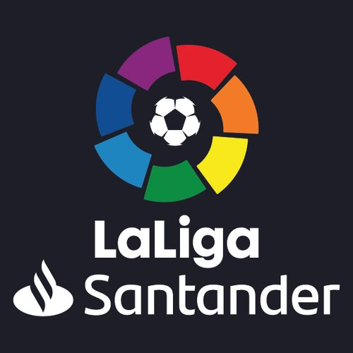

스페인의 최상위 축구 리그. 정식 명칭이 스페인 1부 리그라는 뜻의 '프리메라 디비시온 데에스파냐(Primera División de España)'으로 잘못 알려져있지만, 라리가라는 리그 브랜딩 개편 이후 정식 명칭이 라리가 (La Liga)로 변경되었다. 2016-17 시즌부터는 스폰서였던 BBVA가 포함된 명칭인 '프리메라리가 BBVA'를 사용하지 않고 '라리가'라고 부르기로 결정했다. 하지만 리그 타이틀에 스폰서의 지원을 받지 못하는 것이 꽤 큰 경제적 손실이라고 판단했는지 2016-17 시즌 도중, 산탄데르 은행과 스폰서 계약을 체결하였고 5년간 '라리가 산탄데르'라는 명칭을 사용하기로 했다.
